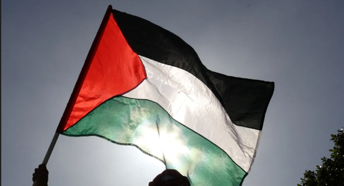
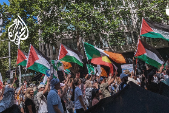
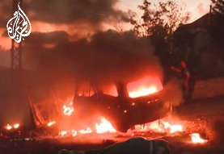
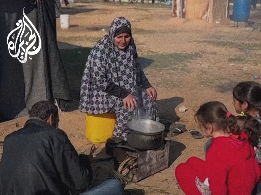

Gaza's Call for Peace: Voices in the Midst of Conflict
In the heart of the ongoing conflict that has shaped the landscape of Gaza, a resilient chorus of voices emerges, calling for a collective yearning for peace. Amidst the echoes of hardship and the palpable tension that defines daily life, individuals from all walks of life in Gaza are coming together to share their stories,
read more

Speaking Up for Gaza: Amplifying Voices in the Midst of Struggle
This category aims to be a platform for advocacy, shedding light on the various voices and perspectives advocating for Gaza on the international stage. It will cover news, initiatives, and campaigns that champion the cause of peace, justice, and humanitarian relief for the people of Gaza. Through interviews, opinion pieces, and analyses, "Speaking Up for Gaza" seeks to highlight the global efforts that aim to bring attention to the challenges faced by the region and advocates for positive change. It's a space for dialogue, awareness, and solidarity with those working tirelessly to address the complex issues surrounding Gaza.
read more

Gaza Ravaged: Unmasking the Human Toll of Conflict
In this category, we confront the harsh reality of Gaza's condition, deeply scarred by the impact of ongoing conflict. Through firsthand accounts, expert analyses, and on-the-ground reports, "Gaza Ravaged" unveils the human toll of war. The category aims to provide a comprehensive understanding of the multifaceted challenges faced by the people of Gaza—be it in terms of physical infrastructure, mental health, or broader societal implications. It seeks to foster empathy, awareness, and a call to action by exposing the profound consequences of an enduring conflict on the lives of those caught in its grip. Together, let us delve into the stories of resilience, survival, and the urgent need for sustainable solutions in the face of humanitarian crisis
read more

Gaza's Youth: Dreams, Aspirations, and the Weight of Conflict
In the shadow of conflict, Gaza's resilient youth navigate a unique and challenging landscape, their dreams often eclipsed by the weight of ongoing hostilities. This category delves into the aspirations of Gaza's young generation, shedding light on their ambitions, talents, and creative endeavors. Despite the adversity that surrounds them, Gaza's youth harbor dreams of education, career pursuits, and contributing to a brighter future for their community
read more